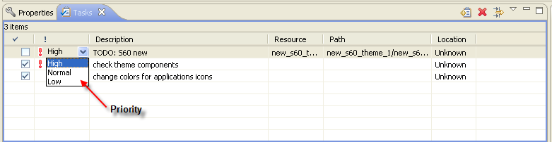

Editing tasks
You can edit the tasks in the Tasks view:
- Click the Priority of
the task and select a new priority level
for the task from the drop-down list.
- Click the Description
field of a task and write a new description for the task.
- Mark the completed checkbox to signify that the task is
completed.
Note: You can also right-click
a task and select Properties to view and edit information about the
task.

Figure: Editing Tasks